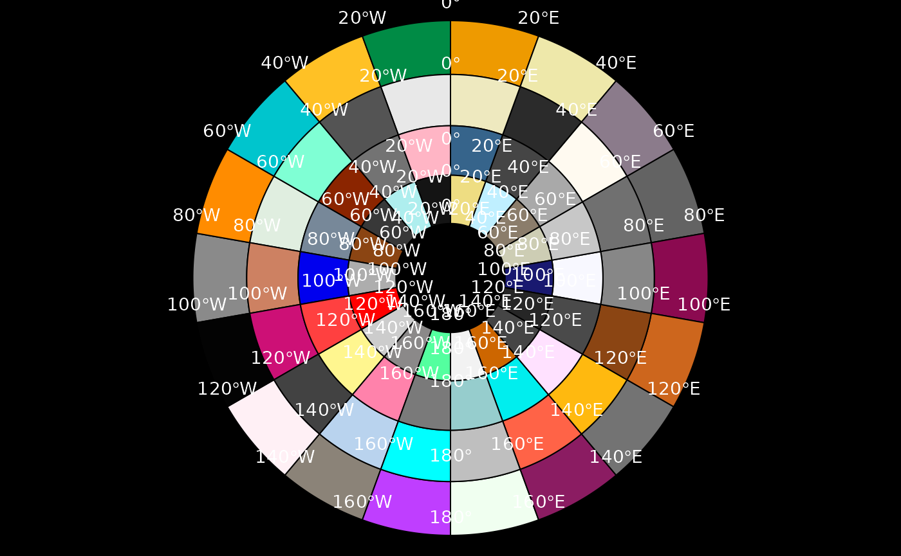

Graticule
Graticules are the longitude latitude lines shown on a projected map, and defining and drawing these lines is not easy to automate. The graticule package provides the tools to create and draw these lines by explicit specification by the user. This provides a good compromise between high-level automation and the flexibility to drive the low level details as needed, using base graphics in R.
Please note that this is an evolving topic, across a number of packages in R. There’s no ongoing integration of how best to do this, and some of the commentary in this vignette will be out of date quickly as individual packages do updates. I’ve recorded the exact versions used for this document at the end.
This is an area that needs much more discussion and outlining of needs and experiences.
Examples
A simple example to build a map around the state of Victoria in Australia. Victoria uses a local Lambert Conformal Conic projection that was introduced while the shift to GDA94 was implemented, to reduce complications due to working with more than one UTM zone for the state.
library(raster)
library(graticule)
## VicGrid
prj <- "+proj=lcc +lat_1=-36 +lat_2=-38 +lat_0=-37 +lon_0=145 +x_0=2500000 +y_0=2500000 +ellps=GRS80 +towgs84=0,0,0,0,0,0,0 +units=m +no_defs"
## specify exactly where we want meridians and parallels
lons <- seq(140, 150, length = 5)
lats <- seq(-40, -35, length = 6)
## optionally, specify the extents of the meridians and parallels
## here we push them out a little on each side
xl <- range(lons) + c(-0.4, 0.4)
yl <- range(lats) + c(-0.4, 0.4)
## build the lines with our precise locations and ranges
grat <- graticule(lons, lats, proj = prj, xlim = xl, ylim = yl)
## build the labels, here they sit exactly on the western and northern extent
## of our line ranges
labs <- graticule_labels(lons, lats, xline = min(xl), yline = max(yl), proj = prj)
## set up a map extent and plot
op <- par(mar = rep(0, 4))
plot(extent(grat) + c(4, 2) * 1e5, asp = 1, type = "n", axes = FALSE, xlab = "", ylab = "")
#plot(pmap, add = TRUE)
## the lines are a SpatialLinesDataFrame
plot(grat, add = TRUE, lty = 5, col = rgb(0, 0, 0, 0.8))
## the labels are a SpatialPointsDataFrame, and islon tells us which kind
text(subset(labs, labs$islon), lab = parse(text = labs$lab[labs$islon]), pos = 3)
text(subset(labs, !labs$islon), lab = parse(text = labs$lab[!labs$islon]), pos = 2)
par(op)A polar example
Download some sea ice concentration data and plot with a graticule. These passive microwave data are defined on a Polar Stereographic grid on the Hughes ellipsoid (predating WGS84), and there are daily files available since 1978. This is not the prettiest map, but the example is showing how we have control over exactly where the lines are created. We can build the lines anywhere, not necessarily at regular intervals or rounded numbers, and we can over or under extend the parallels relative to the meridians and vice versa.
library(raster)
library(graticule)
tfile <- system.file("extdata", "nt_20140320_f17_v01_s.bin", package = "graticule")
ice <- raster(tfile)
meridians <- seq(-180, 160, by = 20)
parallels <- c(-80, -73.77, -68, -55, -45)
mlim <- c(-180, 180)
plim <- c(-88, -50)
grat <- graticule(lons = meridians, lats = parallels, xlim = mlim, ylim = plim, proj = projection(ice))
labs <- graticule_labels(meridians, parallels, xline = -45, yline = -60, proj = projection(ice))
plot(ice, axes = FALSE)
plot(grat, add = TRUE, lty = 3)
text(labs, lab = parse(text= labs$lab), col= c("firebrick", "darkblue")[labs$islon + 1], cex = 0.85)
title(sprintf("Sea ice concentration %s", gsub(".bin", "", basename(tfile))), cex.main = 0.8)
title(sub = projection(ice), cex.sub = 0.6)
Create the graticule as polygons
Continuing from the sea ice example, build the graticule grid as
actual polygons. Necessarily the xlim/ylim option is
ignored since we have not specified sensibly closed polygonal rings
where there are under or over laps.
polargrid <- graticule(lons = c(meridians, 180), lats = parallels, proj = projection(ice), tiles = TRUE)
centroids <- reproj::reproj_xy(coordinates(polargrid), "+proj=longlat +datum=WGS84", source = projection(ice))
labs <- graticule_labels(meridians, parallels, proj = projection(ice))
#labs <- graticule_labels(as.integer(centroids[,1]), as.integer(centroids[,2]), proj = projection(ice))
#labs <- labs[!duplicated(as.data.frame(labs)), ] ## this needs a fix
cols <- sample(colors(), nrow(polargrid))
op <- par(mar = rep(0, 4))
plot(polargrid, col = cols, bg = "black")
text(labs[labs$islon, ], lab = parse(text = labs$lab[labs$islon]), col = "white", cex = 0.9, pos = 3)
par(op)Comparison to tools in sp and rgdal
This section kept for historical interest only.
See: https://github.com/hypertidy/graticule/issues/19#issuecomment-1379874409
Also see here for another implementation of the Tissot Indicatrix in R by user whuber on GIS StackExchange. This is available in the dev package tissot.
Notes
Efforts could be shared with the sp and rgdal projects to improve the
functionality for the llgridlines and its worker functions
gridlines and gridat in that central place,
and I agree with this. But I have an interest in working with graticules
more directly as objects, and potentially stored in relational-table
approach built on dplyr, and so I just found it simpler to start from
scratch in this package. Also, there is a lot of this functionality
spread around the place in sp, raster, maptools, fields, oce and many
others. It is time for a new review, analogous to the effort that built
sp in ca. 2002.
Terminology
I tend to use the same terminology as used within Manifold System because it’s so awesome and that’s where I first learnt about most of these concepts. In my experience not many people use the term graticule in this way, so take it from the master himself on page 8 (Snyder, 1987):
To identify the location of points on the Earth, a graticule or network of longitude and latitude lines has been superimposed on the surface. They are commonly referred to as meridians and parallels, respectively.
Environment
devtools::session_info()
#> ─ Session info ───────────────────────────────────────────────────────────────
#> setting value
#> version R version 4.3.0 (2023-04-21)
#> os Ubuntu 22.04.2 LTS
#> system x86_64, linux-gnu
#> ui X11
#> language en
#> collate C.UTF-8
#> ctype C.UTF-8
#> tz UTC
#> date 2023-06-08
#> pandoc 2.19.2 @ /usr/bin/ (via rmarkdown)
#>
#> ─ Packages ───────────────────────────────────────────────────────────────────
#> package * version date (UTC) lib source
#> bslib 0.4.2 2022-12-16 [1] RSPM
#> cachem 1.0.8 2023-05-01 [1] RSPM
#> callr 3.7.3 2022-11-02 [1] RSPM
#> cli 3.6.1 2023-03-23 [1] RSPM
#> codetools 0.2-19 2023-02-01 [3] CRAN (R 4.3.0)
#> crayon 1.5.2 2022-09-29 [1] RSPM
#> desc 1.4.2 2022-09-08 [1] RSPM
#> devtools 2.4.5 2022-10-11 [1] RSPM
#> digest 0.6.31 2022-12-11 [1] RSPM
#> ellipsis 0.3.2 2021-04-29 [1] RSPM
#> evaluate 0.21 2023-05-05 [1] RSPM
#> fastmap 1.1.1 2023-02-24 [1] RSPM
#> fs 1.6.2 2023-04-25 [1] RSPM
#> geosphere 1.5-18 2022-11-15 [1] RSPM
#> glue 1.6.2 2022-02-24 [1] RSPM
#> graticule * 0.3.0 2023-06-08 [1] local
#> highr 0.10 2022-12-22 [1] RSPM
#> htmltools 0.5.5 2023-03-23 [1] RSPM
#> htmlwidgets 1.6.2 2023-03-17 [1] RSPM
#> httpuv 1.6.11 2023-05-11 [1] RSPM
#> jquerylib 0.1.4 2021-04-26 [1] RSPM
#> jsonlite 1.8.5 2023-06-05 [1] RSPM
#> knitr 1.43 2023-05-25 [1] RSPM
#> later 1.3.1 2023-05-02 [1] RSPM
#> lattice 0.21-8 2023-04-05 [3] CRAN (R 4.3.0)
#> lifecycle 1.0.3 2022-10-07 [1] RSPM
#> magrittr 2.0.3 2022-03-30 [1] RSPM
#> memoise 2.0.1 2021-11-26 [1] RSPM
#> mime 0.12 2021-09-28 [1] RSPM
#> miniUI 0.1.1.1 2018-05-18 [1] RSPM
#> pkgbuild 1.4.0 2022-11-27 [1] RSPM
#> pkgdown 2.0.7 2022-12-14 [1] RSPM
#> pkgload 1.3.2 2022-11-16 [1] RSPM
#> prettyunits 1.1.1 2020-01-24 [1] RSPM
#> processx 3.8.1 2023-04-18 [1] RSPM
#> profvis 0.3.8 2023-05-02 [1] RSPM
#> PROJ 0.4.0 2020-10-19 [1] RSPM
#> proj4 1.0-12 2022-11-30 [1] RSPM
#> promises 1.2.0.1 2021-02-11 [1] RSPM
#> ps 1.7.5 2023-04-18 [1] RSPM
#> purrr 1.0.1 2023-01-10 [1] RSPM
#> R6 2.5.1 2021-08-19 [1] RSPM
#> ragg 1.2.5 2023-01-12 [1] RSPM
#> raster * 3.6-20 2023-03-06 [1] RSPM
#> Rcpp 1.0.10 2023-01-22 [1] RSPM
#> remotes 2.4.2 2021-11-30 [1] RSPM
#> reproj 0.4.3 2022-10-28 [1] RSPM
#> rlang 1.1.1 2023-04-28 [1] RSPM
#> rmarkdown 2.22 2023-06-01 [1] RSPM
#> rprojroot 2.0.3 2022-04-02 [1] RSPM
#> sass 0.4.6 2023-05-03 [1] RSPM
#> sessioninfo 1.2.2 2021-12-06 [1] RSPM
#> shiny 1.7.4 2022-12-15 [1] RSPM
#> sp * 1.6-1 2023-05-31 [1] RSPM
#> stringi 1.7.12 2023-01-11 [1] RSPM
#> stringr 1.5.0 2022-12-02 [1] RSPM
#> systemfonts 1.0.4 2022-02-11 [1] RSPM
#> terra 1.7-29 2023-04-22 [1] RSPM
#> textshaping 0.3.6 2021-10-13 [1] RSPM
#> urlchecker 1.0.1 2021-11-30 [1] RSPM
#> usethis 2.2.0 2023-06-06 [1] RSPM
#> vctrs 0.6.2 2023-04-19 [1] RSPM
#> xfun 0.39 2023-04-20 [1] RSPM
#> xtable 1.8-4 2019-04-21 [1] RSPM
#> yaml 2.3.7 2023-01-23 [1] RSPM
#>
#> [1] /home/runner/work/_temp/Library
#> [2] /opt/R/4.3.0/lib/R/site-library
#> [3] /opt/R/4.3.0/lib/R/library
#>
#> ──────────────────────────────────────────────────────────────────────────────